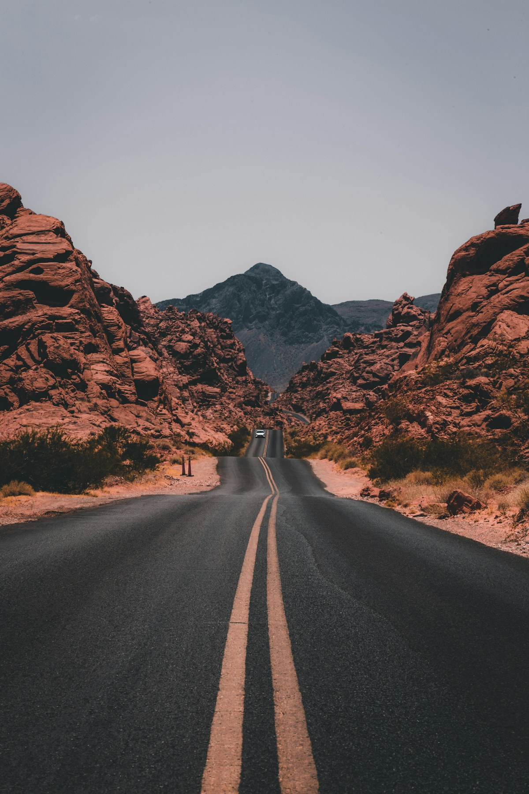

Independent design practice · Est. 2018
Thoughtfully made.
Quietly present.
We design objects and identities that feel at home in everyday life. Useful, lasting, and considered from every side.
Explore selected work ↓
FIELD NOTES / 001 — Finding a slower rhythmPhoto credit
A few things we've made
Selected work, 2024—2026.
Four fictional projects exploring the relationship between form, material, and everyday use.
4 projects shown
The way we work
Good design makes room.
For the material. For the person.
For everything that happens next.
We begin by understanding the everyday context. What needs to work, what can become simpler, and which details deserve our attention.
Our process moves between research, making, and observation. We test small decisions early and let what we learn shape the whole.
A place to begin
Have something in mind?
Tell us a little about it. A good conversation is a good start.